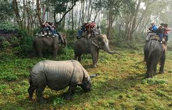

Located between the majestic Himalaya Mountains and the fascinating Indian jungles, Nepal is a land
where things like yaks, yetis, mountain peaks and hidden monasteries appear to be seemingly common.
Ever since the country opened its borders to foreigners, it emerged as an enchanting destination for
hikers and trekkers of all types, many venturing to the famous Everest Base Camp. Its rugged trails
proved unparalleled trekking opportunities while the appeal of climbing Mount Everest was more than
enough to attract mountain climbers from all over the planet.
Over the years, Nepal has also managed to invent itself into a popular travel destination. Its rich
natural beauty, historic attractions and vast cultural heritage has proven to be the perfect mix
between the ancient and the modern, slow paced lifestyles and frantic city life. No wonder then that
Nepal is featured high on the list of travel trends for 2016 and beyond.
Just for the anxious ones, Nepal’s earthquake did not destroy the country, although it was almost
portrayed that way in the various medias. Old monuments were laid down and many local villages
suffered, however, many monuments, buildings etc remains 100% intact and almost all trekking routes
have already opened up again.
So, here's our list of the top 7 best things to do in Nepal.
1.Trekking in Nepal.
2.Panoramic Flight Over the Himalayas.
3.Visit to Chitwan National Park.

4.Exploring Pokhara.
5.Mountain Biking in Kathmandu Valley.
6.Mount Everest Helicopter Tour.
7.River Rafting on the Bhote Koshi River